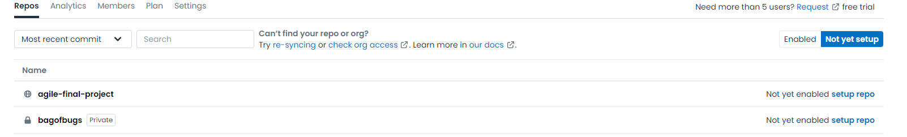

Chapter 3 Test coverage
3.1 test-coverage
Quick how-to to set a GitHub action to get code coverage and the badge from Codecov each time there is merge into the main (or master) branch using r-lib test-coverage.yaml.
3.2 Prerequisite
Have a Codecov account link with your repository.
None in particular but could be good to have some tests as to get a coverage of something.
3.3 Steps
Create your package.
Link your local to the remote if it has not be done yet (make sure your project is linked to a Github repository).
Make sure Codecov has synced with your repository. The repository should appear in the Not yet setup if this is the first time. The syncing between GitHub and Codecov takes a bit of time so you can go for a coffee or lunch.
Try to test your package
covr::package_coverage().- While this step is not really necessary, it is to make sure your tests runs once and any further problems do not come from the tests.
Add the test-coverage.yaml
usethis::use_github_action("test-coverage")Add the badge with
usethis::use_coverage("codecov")- This step should add a badge in your readme file.

- Or should give you a message in the console telling you to copy and paste some lines in the README.

- If nothing happen, you can add the line directly following the syntax or remove the codecov.yml from the project folder and run
usethis::use_coverage("codecov")again.
- This step should add a badge in your readme file.
Push!
The GitHub action will push the report to Codecov, you can see the report by clicking on the badge.
- Github and Codecov needs to sync for the percentage to appear